4-1 植物的運輸構造（一）
焦點一：維管束的組成與功能、排列方式、被子植物莖內構造比較
1. 植物的運輸構造概述
(1) 定義：部分植物體內，負責運輸水分與養分的管道構造，統稱為 維管束。
(2) 功能：植物體藉由維管束將根部吸收的水分與葉部製造的養分運送至全身各部位。
2. 維管束的組成與功能（由內向外排列）
| 組成構造 | 分布位置 | 核心功能與運輸方向 |
|---|
| 木質部 |
維管束 內側 |
負責運輸 水分 與礦物質（無機鹽），方向一律 由下往上 單向運輸（根 → 莖 → 葉）。 |
| 形成層 |
木質部與韌皮部之間 |
為分生組織，具細胞分裂能力。向內分裂長出新的 木質部，向外分裂長出新的 韌皮部，使莖逐年加粗。 |
| 韌皮部 |
維管束 外側 |
負責運輸光合作用產生的有機 養分（如蔗糖），方向由 提供養分處 運往 需求養分處（可向上或向下雙向流動）。 |
3. 被子植物莖內維管束之比較
| 分類項目 | 單子葉植物 | 雙子葉草本植物 | 雙子葉木本植物 |
|---|
| 莖切面圖 |
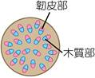 |
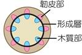 |
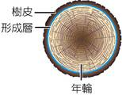 |
| 排列方式 |
散生 排列 |
環狀 排列 |
環狀 排列 |
| 形成層 |
無 形成層（無法逐年加粗） |
有 形成層 |
有 形成層（加粗明顯） |
| 年輪特徵 |
無 年輪 |
無 年輪 |
有 明顯年輪 |
| 常見代表 |
水稻、玉米、甘蔗、小麥、百合、竹子 |
向日葵、南瓜、鬼針草、酢漿草、牽牛花 |
油桐、櫻花、朱槿、榕樹、黑板樹、臺灣扁柏 |
4-1 植物的運輸構造（二）
焦點二：木本植物莖的橫切構造、樹皮與木材、年輪形成機制與春材秋材
1. 木本植物莖的內部組織分布
(1) 樹皮：形成層以 外 的所有組織，包含最外層保護用的木栓層、皮層以及 韌皮部。
(2) 木材：形成層以 內 的所有組織，即多年生長累積的 木質部，占樹幹大部分體積，具有支持與輸水功能。
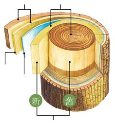
▲ 木本植物莖構造剖面立體圖（樹皮、木材、木質部、形成層、韌皮部）
2. 年輪（Growth Rings）的成因與春材秋材比較
(1) 成因：氣候四季交替明顯地區，氣溫與降雨量隨季節變化，導致形成層生長速度與新生的 木質部 細胞大小不同，產生深淺相間的環狀紋路。
| 比較項目 | 春材（早材） | 秋材（晚材） |
|---|
| 生長季節 |
春夏季節 |
秋冬季節 |
| 氣候環境 |
氣候溫暖、雨量 較多 |
氣候寒冷、雨量 較少 |
| 生長速度 |
形成層分裂生長速度 較快 |
形成層分裂生長速度 較慢 |
| 細胞大小 |
木質部細胞管徑較 大、管壁較薄 |
木質部細胞管徑較 小、管壁較厚 |
| 外觀顏色 |
顏色較 淺、環帶質地疏鬆較寬 |
顏色較 深、環帶質地緊密較窄 |
💡 年輪判讀關鍵要點：
• 年輪是由 木質部 構成，韌皮部不會形成年輪。
• 一條淺色環帶（春材）加一條深色環帶（秋材）合稱為 一輪，代表一年。
• 越靠近樹幹中心的木質部年代越 老（內老外新），越靠近形成層的木質部越 新。
4-1 隨堂實戰評量
維管束排列與功能、樹幹環切鑽取組織判別（第 1～2 題）
(A) 形成層會形成年輪
(B) 形成層可運送養分
(C) 形成層在木質部與韌皮部中間
(D) 形成層向外長出新的木質部細胞
【解析】(A) 形成層向內分裂產生的新「木質部」才會形成年輪；(B) 形成層為分生組織，不負責運送養分（運送養分為外側的韌皮部）；(C) 正確，環狀排列維管束的形成層位於木質部（內側）與韌皮部（外側）之間；(D) 形成層向內形成木質部，向外形成韌皮部。故答案選 (C)。
(A) 乙＜丙＜甲
(B) 乙＜甲＜丙
(C) 甲＜丙＜乙
(D) 甲＜乙＜丙
【解析】由組織主要功能判斷：甲為「韌皮部」（運送養分）、乙為「木質部」（運送水分）、丙為「形成層」（具細胞分裂能力）。木本植物樹幹由外向內依序為：樹皮外側 → 韌皮部（甲） → 形成層（丙） → 木質部（乙） → 樹幹中心。因此與外表面 X 點的直線距離由近到遠為：甲＜丙＜乙。故答案選 (C)。
🎯 核心觀念整合：維管束構造速記口訣
• 內木外韌：木質部在內側（運水木），韌皮部在外側（運養分）。
• 向內生木、向外生韌：形成層分裂向內長出木質部（木材），向外長出韌皮部（樹皮內層）。
• 樹木環狀剝皮致死原因：破壞了樹皮中的 韌皮部，使得葉片製造的有機養分無法向下運送至根部，導致根部缺乏養分而死亡，最終全株枯死！
4-2 植物體內物質的運輸（一）
焦點三：水分與養分運輸途徑、蒸散作用拉力、氣孔與保衛細胞調控機制
1. 植物體內物質的運輸途徑比較
| 構造名稱 | 分布位置 | 運輸物質 | 運輸方向與主要動力 |
|---|
| 木質部 |
維管束內側
（莖內側、葉上側） |
水分 與 礦物質 |
一律 由下往上 單向運輸（根 → 莖 → 葉）。
主要動力：葉片之 蒸散作用 拉力。 |
| 韌皮部 |
維管束外側
（莖外側、葉下側） |
光合作用產生的
有機養分（如蔗糖） |
由提供處往需求處（雙向流動：葉 → 根/果實，或發芽時塊根/塊莖 → 新芽）。 |
2. 蒸散作用（Transpiration）
(1) 定義：植物體內的水分轉變為水蒸氣，主要由葉片的 氣孔 散失到空氣中的生理現象。
(2) 生理意義：
① 產生強大牽引拉力，是植物體內水分與溶於水中的礦物質向上運送的 主要動力。
② 水蒸氣散失吸收汽化熱，能有效調節並降低植物體表面溫度，避免高溫灼傷。
3. 氣孔與保衛細胞的調節機制
(1) 分布特點：主要分布在陸生植物葉片的 下表皮（可減少陽光直射造成水分過度散失）。
(2) 細胞結構：氣孔是由兩個半月形的 保衛細胞 圍成；保衛細胞含 葉綠體，表皮細胞則透明無葉綠體。
(3) 開閉機制：
• 白天光照充足且水分充足時：保衛細胞吸水膨脹彎曲 → 氣孔 張開 → 蒸散作用旺盛、氣體進出順暢。
• 夜間黑暗無光或植物體乾旱缺水時：保衛細胞失水萎縮拉直 → 氣孔 關閉 → 減少水分散失保護植株。
4-2 植物體內物質的運輸（二）
焦點四：芹菜水分運輸探究實驗（紅墨水染色橫切與縱切面解析）
1. 芹菜水分運輸探究實驗
(1) 實驗操作：將帶葉芹菜枝條插入裝有稀釋 紅墨水 的量筒中，置於通風光照處靜置一段時間。
(2) 實驗現象觀察：量筒液面明顯下降；芹菜葉片葉脈及葉柄內部被染成紅色。
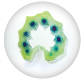
① 芹菜葉片（葉脈變紅）
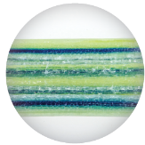
③ 葉柄縱切（紅色連續細管）
(3) 實驗切面推論與結論：
• 橫切面所見的紅色小斑點為維管束的 木質部，證明水分是由木質部負責輸送。
• 縱切面所見的紅色細絲為相連的導管細胞，證明水分在木質部中形成 連續管柱 向上輸送。
• 葉片葉脈變紅且邊緣水分釋出，證明水分最後經由葉脈輸送至葉肉並由 氣孔 蒸散到大氣中。
2. 影響蒸散作用速率的環境變因對照表
| 環境／構造變因 | 蒸散速率加快的條件 | 蒸散速率減慢的條件 |
|---|
| 葉片數量 |
葉片 較多（氣孔總表面積大） |
去除葉片或葉片數量 較少 |
| 空氣流動 |
環境 通風良好（加速擴散） |
空氣靜止、環境不通風 |
| 環境溫度與光照 |
光照 充足、溫度適度溫暖 |
黑暗無光（氣孔關閉）、溫度極低 |
| 環境空氣濕度 |
空氣濕度 較低（乾燥環境） |
空氣潮濕、相對濕度飽和 |
4-2 隨堂實戰評量（一）
植物體內運輸方向、葉表皮氣孔顯微圖、蒸散變因實驗（第 1～3 題）
(A) 甲能釋放出二氧化碳，並吸收水分進入植物體內
(B) 乙為養分的輸送方向
(C) 丙為水分的輸送方向
(D) 甲的輸送方向能釋放出氧氣及水分
【解析】(A) 錯誤：甲為氣孔釋出氣體與水分的方向，植物體透過氣孔釋放氧氣及水蒸氣（蒸散作用），水分是由根部自土壤吸收，並非由葉片甲處吸收進入體內。(B)(C)(D) 敘述均正確。故答案選 (A)。
(A) a 細胞能製造養分
(B) b 為氣體進出植物的通道
(C) c 能調節 b 的開閉
(D) b 張開時，植物的蒸散作用通常較旺盛
【解析】圖中 a 為半月形「保衛細胞」（具葉綠體可光合作用製造養分），b 為「氣孔」，c 為「表皮細胞」（透明無葉綠體，具保護功能）。(C) 錯誤：調節氣孔 b 開閉的是「保衛細胞 a」，而非表皮細胞 c。故答案選 (C)。
(A) 有葉片、通風處
(B) 有葉片、不通風處
(C) 無葉片、通風處
(D) 無葉片、不通風處
【解析】蒸散作用的主要器官是「葉片」（氣孔分布處），且「通風良好」會加速葉片表面水蒸氣擴散，促使蒸散作用速率最高。因此「有葉片、通風處」的蒸散作用效率最高。答案選 (A)。
4-2 隨堂實戰評量（二）
礦物質運輸方向、水分上升動力分析、水蜜桃水肥吸收（第 4～6 題）
(A) 甲，丙
(B) 乙，丙
(C) 甲，丁
(D) 乙，丁
【解析】礦物質溶於水中，隨水分由根部吸收並經由「木質部」一律「由下向上單向運輸」，對應圖(一)之「乙」方向；白天蒸散作用旺盛時，保衛細胞吸水膨脹，氣孔呈「張開」狀態，對應圖(二)之「丙」。故正確組合為「乙，丙」，答案選 (B)。
(A) 蒸散作用的進行
(B) 木質部的細胞上下相連成細管
(C) 根、莖、葉內輸送水分的部位，其內的水分形成連續的管柱
(D) 呼吸作用的進行需要水分
【解析】植物水分向上提升的物理機制包括：①葉片「蒸散作用」產生的拉力（主要動力）；②木質部死細胞上下貫通形成細長管狀導管；③水分子之間的內聚力與附著力在管內形成不中斷的「連續水柱」；④根毛吸水的根壓。(D) 呼吸作用需要水分是代謝生理需求，並非促使水分向上運輸的物理動力。故答案選 (D)。
(A) 肥料由韌皮部輸送，水分由木質部輸送
(B) 肥料由木質部輸送，水分由韌皮部輸送
(C) 水分及肥料皆由木質部單向輸送
(D) 水分及肥料皆由韌皮部雙向輸送
【解析】土壤中的肥料（礦物質/無機鹽類）溶解於水中後，由根毛吸收，皆隨同水分進入「木質部」並「由下往上單向運輸」至全株；韌皮部則是運送葉片光合作用所產生的有機養分（葡萄糖、蔗糖）。故答案選 (C)。
🎯 考點精要：水與肥料 vs. 養分運輸對比
• 水分 ＋ 肥料（無機鹽）：由 木質部 負責，運輸方向一律 由下往上，動力為蒸散拉力。
• 有機養分（光合產物）：由 韌皮部 負責，運輸方向 雙向均可，由提供部位送往消耗或儲存部位。
4-3 人體心血管系統的組成（一）
焦點五：心血管系統組成、心臟腔室構造、瓣膜與心搏/心音機制
1. 心血管系統概述
人體心血管系統由 心臟（動力幫浦）、血管（流通通道）與 血液（運送載體）三者共同組成。
2. 心臟（Heart）的構造與運作機制
(1) 位置與構造：位於胸腔中央偏 左 側，主要由心肌構成。
(2) 四大腔室（解剖方位與受檢者相反：左在右、右在左）：
• 上方為心房（接收血液）：左心房 接收來自肺部的肺靜脈（充氧血）；右心房 接收全身的上、下大靜脈（缺氧血）。
• 下方為心室（壓出血液）：左心室 肌肉壁最厚、收縮力最強，將血液壓入主動脈送往全身；右心室 將血液壓入肺動脈送往肺部。
(3) 瓣膜（Valves）：位於心房與心室之間，以及心室與動脈之間，功能為防止 血液逆流，維持血液單向向前流動。
(4) 心搏與心音：心臟有規律的收縮與舒張稱為 心搏。心室 收縮 時血液射入動脈；心室 舒張 時血液由靜脈回流心房。瓣膜快速關閉所產生的震動聲即為 心音。
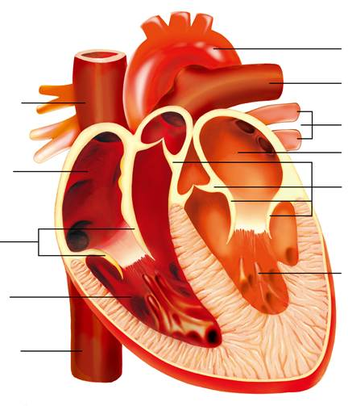
▲ 人體心臟解剖內部構造（四大腔室、出入主要血管與瓣膜位置）
4-3 人體心血管系統的組成（二）
焦點六：動脈/微血管/靜脈特性比較表、血液成分（血漿與三種血球）
1. 動脈、微血管與靜脈之比較
| 比較項目 | 動脈（Artery） | 微血管（Capillary） | 靜脈（Vein） |
|---|
| 切面示意圖 |
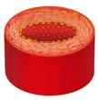 |
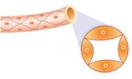 |
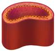 |
| 血液流向 |
離開 心臟（心室 → 微血管） |
由小動脈流向小靜脈 |
流回 心臟（微血管 → 心房） |
| 管壁厚度與彈性 |
管壁 最厚，管壁彈性 最佳 |
管壁 最薄（僅一層內皮細胞） |
管壁較薄，彈性較動脈差 |
| 管腔大小 |
管腔中等 |
管腔 最小（紅血球單行通過） |
管腔 最大（常呈扁平塌陷） |
| 血壓與流速 |
血壓 最高，流速 最快 |
血壓中等，流速 最慢 |
血壓 最低，流速中等 |
| 特殊構造與特點 |
管壁隨心搏跳動產生 脈搏 |
血液與細胞進行 物質交換 處 |
四肢靜脈管腔內具 瓣膜 防止逆流 |
2. 血液的成分與功能（血漿占55%，血球占45%）
| 血液成分 | 外觀形狀 | 細胞核 | 大小比較 | 主要功能與特性 |
|---|
| 血漿 |
淡黃色液體 |
- |
- |
含水90%，運送 養分、廢物、二氧化碳、激素與抗體。 |
| 紅血球 |
雙凹圓盤狀 |
無 細胞核 |
中等 |
內含血紅素，主要負責運送 氧氣 至全身細胞。 |
| 白血球 |
多呈球形 |
有 細胞核 |
體積 最大 |
能變形穿過微血管壁，吞噬病原體，具 防禦疾病 功能。 |
| 血小板 |
不規則碎片 |
無 細胞核 |
體積 最小 |
在傷口處破裂釋放凝血因子，協助 血液凝固 與傷口癒合。 |
4-3 隨堂實戰評量（一）
心跳脈搏關係、血漿運送養分、動脈與靜脈特性比較（第 1～3 題）
(A) 心跳次數＞脈搏次數
(B) 心跳次數＝脈搏次數
(C) 心跳次數＜脈搏次數
(D) 心跳次數與脈搏次數無關
【解析】正常人體的心臟每跳動（心搏）收縮一次，便將血液壓入動脈，引起動脈管壁相應產生一次規律的搏動，即為「脈搏」。因此同一時間內，心跳次數必定等於脈搏次數。答案選 (B)。
(A) 血漿
(B) 白血球
(C) 紅血球
(D) 血小板
【解析】血液分為「血球」與「血漿」。血漿約占血液體積的 55%，主要成分為水（約90%），負責運送養分（如葡萄糖、胺基酸）、代謝廢物（如尿素）、二氧化碳、抗體與激素等；紅血球主要負責攜帶氧氣。故答案選 (A)。
(A) 管壁彈性比較
(B) 有無瓣膜比較
(C) 血流方向比較
(D) 管壁厚度比較
【解析】(A) 動脈管壁彈性最佳，靜脈較差；(B) 四肢較大的靜脈管腔內具有瓣膜防止血液逆流，一般動脈管壁內無瓣膜；(C) 動脈血流方向為「將血液帶離心臟」，靜脈為「將血液引導流回心臟」，正確；(D) 動脈管壁最厚，靜脈較薄。答案選 (C)。
4-3 隨堂實戰評量（二）
人類血球示意圖、小魚尾鰭血流觀察、血液成分功能（第 4～6 題）
(A) 甲能使血液凝固
(B) 乙能攜帶氧氣
(C) 乙能離開微血管壁吞噬細菌
(D) 丙具有防禦疾病的功能
【解析】圖中甲為雙凹圓盤狀的「紅血球」（攜帶氧氣）；乙為不規則形最小的「血小板」（協助血液凝固與傷口癒合）；丙為體積最大、具有細胞核的「白血球」（防禦疾病、吞噬病原體）。(D) 丙具有防禦疾病的功能，正確。故答案選 (D)。
(A) 小動脈、微血管、小靜脈
(B) 小動脈、微血管、小動脈
(C) 小靜脈、微血管、小動脈
(D) 小靜脈、微血管、小靜脈
【解析】複式顯微鏡呈現「上下顛倒、左右相反」的倒像。當將實物培養皿向「右」移動時，顯微鏡視野中的影像會往「左」移動。因此位於視野最左側的血管會最先消失，依序為左側小動脈 → 中間微血管 → 右側小靜脈。故答案選 (A)。
(A) 紅血球中的血紅素可運送氧氣
(B) 白血球可運輸激素
(C) 血小板是體積最小的血球，其功能和血液凝固有關
(D) 血漿的主要成分是水，可運輸養分、二氧化碳和其他廢物
【解析】(B) 錯誤：激素（荷爾蒙）溶於「血漿」中由血漿運輸，白血球的功能是防禦病原體、吞噬細菌與產生抗體，並不負責運送激素。(A)(C)(D) 敘述均正確。故答案選 (B)。
4-3 隨堂實戰評量（三）
心臟瓣膜與缺氧血逆流推論、血管橫切面與脈搏探測（第 7～8 題）
(A) 左心房和左心室之間
(B) 左心室和主動脈之間
(C) 肺靜脈和左心房之間
(D) 右心房和右心室之間
【解析】人體心臟的右半部（右心房、右心室）流動的是「缺氧血」，左半部（左心房、左心室）流動的是「充氧血」。心室收縮時，若缺氧血逆流回心房，表示是「右心室」收縮時血液逆流至「右心房」，故閉合不全的瓣膜位於「右心房和右心室之間」（三尖瓣）。答案選 (D)。
(A) 甲
(B) 乙
(C) 丙
(D) 甲或丙
【解析】由血管橫切面圖可知：甲管壁最厚、管腔維持圓形，為「動脈」；乙管壁最薄僅一層細胞，為「微血管」；丙管壁較薄、管腔較大扁塌，為「靜脈」。探測手腕橈動脈所感受到的脈搏搏動，來自「動脈甲」。故答案選 (A)。
🎯 核心觀念整合：心臟腔室、瓣膜與三種血管速記
• 右室缺氧、左室充氧：心臟右半邊（右心房、右心室）流動暗紅色缺氧血；左半邊（左心房、左心室）流動鮮紅色充氧血。
• 房室瓣與動脈瓣：心房心室間的瓣膜在心室收縮時關閉，防止血液逆流回心房；心室動脈間的瓣膜在心室舒張時關閉，防止血液逆流回心室。
• 血管特性口訣：動脈壁最厚彈性佳測脈搏；微血管最薄流速最慢換物質；靜脈腔最大壁較薄具瓣膜防倒流。
4-4 人體的循環系統（一）
焦點七：心血管系統循環途徑（體循環與肺循環路徑、微血管物質交換、血液含氧量比較）
1. 心血管系統的雙循環途徑
(1) 體循環（大循環）：
• 路徑：左心室 → 主動脈 → 小動脈 → 全身組織微血管（物質交換） → 小靜脈 → 上、下大靜脈 → 右心房。
• 功能：將充氧血輸送至全身組織細胞，供應氧氣與養分，並帶走二氧化碳與代謝廢物，血液由充氧血轉變為 缺氧血。
(2) 肺循環（小循環）：
• 路徑：右心室 → 肺動脈 → 肺部微血管（氣體交換） → 肺靜脈 → 左心房。
• 功能：將缺氧血送至肺泡微血管排出二氧化碳，吸收氧氣，血液由缺氧血轉變為 充氧血 流回心臟。
2. 體循環與肺循環之微血管物質交換圖解
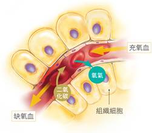
① 組織微血管（充氧血 → 缺氧血）
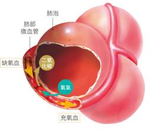
② 肺泡微血管（缺氧血 → 充氧血）
3. 血液含氧量與顏色對照速查表
| 血液類型 | 含氧量 | 外觀顏色 | 流經之心臟腔室與主要血管 |
|---|
| 充氧血（動脈血） |
含氧量 高 |
呈 鮮紅 色 |
左心房、左心室、肺靜脈、主動脈、全身各級動脈。 |
| 缺氧血（靜脈血） |
含氧量 低 |
呈 暗紅 色 |
右心房、右心室、上/下大靜脈、全身各級靜脈、肺動脈。 |
💡 觀念易錯警示：「動脈」不一定流充氧血（如肺動脈流暗紅色缺氧血）；「靜脈」不一定流缺氧血（如肺靜脈流鮮紅色充氧血）！判斷血管名稱看流向（離心為動脈、回心為靜脈），判斷血液種類看含氧量。
4-4 人體的循環系統（二）
焦點八：人體淋巴系統（組織液與淋巴循環）、人體防禦作用三道防線與疫苗機制
1. 人體的淋巴系統（Lymphatic System）
(1) 體液三步轉換關係：
• 血漿：微血管內的液體部分，當血液流經全身微血管時，部分血漿濾出微血管壁進入組織間隙，成為 組織液。
• 組織液：浸潤在組織細胞周圍進行物質交換，部分組織液滲入淋巴管，稱為 淋巴（淋巴液）。
• 淋巴回流：淋巴在淋巴管內單向流動，經淋巴結過濾後，最後在鎖骨下注入 靜脈，回流至心血管系統。
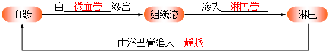
▲ 體液循環三步轉換路徑：血漿 → 組織液 → 淋巴 → 靜脈
(2) 淋巴結（Lymph Nodes）：淋巴管途中的膨大構造，內含大量 淋巴球（白血球的一種），可過濾清除病原體。人體感染時淋巴結會腫脹。
2. 人體防禦作用的三道防線
| 防禦層級 | 專一性 | 防禦機制與特點 | 參與構造與成分 |
|---|
| 第一道防線 |
非專一性 |
阻擋病原體入侵體內的物理與化學屏障。 |
皮膚、黏膜、胃酸、眼淚溶菌酶、呼吸道纖毛。 |
| 第二道防線 |
非專一性 |
病原體入侵傷口後，引起紅、熱、腫、痛，吞噬細胞消滅病原體。 |
發炎反應、吞噬性白血球。 |
| 第三道防線 |
專一性 |
辨識特定病原體抗原，針對特定病原體進行攻擊並產生免疫記憶。 |
淋巴球（T細胞、B細胞）、抗體（蛋白質）。 |
(3) 疫苗（Vaccine）的免疫原理：透過施打無毒或弱化的病原體抗原，誘發第三道防線之淋巴球產生專一性 記憶性。日後真正病原體入侵時，能更 快速 且大量產生抗體消滅病原體。
4-4 隨堂實戰評量（一）
體液轉換途徑、心臟腔室辨識、顯微鏡血流判斷、體液成分比較（第 1～4 題）
(A) 淋巴 → 組織液 → 血漿 → 靜脈
(B) 血漿 → 組織液 → 淋巴 → 靜脈
(C) 組織液 → 血漿 → 淋巴 → 動脈
(D) 血漿 → 淋巴 → 組織液 → 微血管
【解析】食物吸收後的養分進入血液（血漿）；當血液流經全身微血管時，部分血漿濾出微血管管壁進入組織間隙成為「組織液」；部分組織液滲入淋巴管成為「淋巴」；淋巴在淋巴管內單向流動，經淋巴結過濾後，最後在鎖骨下靜脈處匯入心血管系統的「靜脈」。正確順序為：血漿 → 組織液 → 淋巴 → 靜脈。答案選 (B)。
【解析】由心臟解剖構造圖判斷：甲為右心房、乙為左心房、丙為右心室、丁為左心室。人體體循環的缺氧血經由上大靜脈與下大靜脈流回心臟的「右心房（甲）」。乙左心房接肺靜脈，丙右心室接肺動脈，丁左心室接主動脈。故答案選 (A)。
(A) 甲為小動脈，丙為小靜脈
(B) 甲為大靜脈，乙為小動脈
(C) 甲、丁皆為小動脈
(D) 甲、丙皆為小靜脈
【解析】血液流動方向一律是由「動脈 → 微血管 → 靜脈」。由箭頭可知：甲處一條血管分支為多條微細的乙（微血管），故甲為「小動脈」；乙處紅血球單行排列通過微血管；之後匯集進入丙血管流出，故丙為「小靜脈」。答案選 (A)。
(A) 甲乙
(B) 乙丙
(C) 甲丙
(D) 都不相同
【解析】組織液是由血漿濾出微血管壁形成（不含紅血球及大分子蛋白質）；而淋巴液則是由組織液滲入淋巴管形成。因此「組織液（乙）」與「淋巴（丙）」的成分極為相似，皆為清澈透明、含水、無機鹽、葡萄糖及小分子蛋白質與淋巴球的液體。答案選 (B)。
4-4 隨堂實戰評量（二）
心血管系統綜合判別、微血管氣體擴散方向、淋巴結腫脹、充氧血血管判定（第 5～8 題）
(A) 血液在微血管與細胞間交換氣體、養分和廢物
(B) 肺動脈內的血液富含氧，所以呈鮮紅色
(C) 血液經由上大靜脈和下大靜脈流回左心房
(D) 靜脈是將血液由心臟輸出的血管，管壁比較厚且富有彈性
【解析】(A) 正確：微血管管壁僅一層內皮細胞且血流最慢，是進行物質與氣體交換的唯一場所；(B) 肺動脈將右心室的缺氧血送往肺部，血液缺氧呈暗紅色；(C) 血液經由上、下大靜脈流回「右心房」；(D) 將血液輸出心臟的血管是「動脈」，靜脈是將血液導回心臟。故答案選 (A)。
(A) a 路徑須經右心房
(B) b 路徑須經主動脈
(C) 甲是二氧化碳的擴散方向
(D) 乙是廢物的擴散方向
【解析】在組織細胞處，血液將氧氣與養分釋出給細胞（甲方向），細胞代謝產生的二氧化碳與代謝廢物則擴散進入微血管（乙方向），因此乙是廢物/二氧化碳的擴散方向，(D) 正確；甲為氧氣/養分擴散方向；a 為體循環微血管，其血液經靜脈流回右心房；b 為肺循環微血管，流回肺靜脈及左心房。故答案選 (D)。
(A) 小華一定得了淋巴腺癌
(B) 小華的手臂可能有細菌感染
(C) 此處的淋巴結正在製造紅血球
(D) 小華體內過多的血液滲入此處的淋巴結
【解析】淋巴結內含有大量淋巴球，具有過濾病原體並啟動免疫反應的功能。當身體某部位受到病原體感染（如手臂傷口細菌感染），該區域引流的淋巴結會聚集大量淋巴球進行清除與免疫作戰，導致淋巴結發炎腫脹。紅血球由骨髓製造，非由淋巴結製造。故答案選 (B)。
(A) 甲丁戊
(B) 乙丁戊
(C) 丁戊
(D) 甲丙
【解析】充氧血流經肺靜脈、左心房、左心室與主動脈（全身動脈），血液含氧量高呈鮮紅色；缺氧血流經上下大靜脈、右心房、右心室與肺動脈，血液含氧量低呈暗紅色。因此充氧血的血管為「甲(肺靜脈)」與「丙(主動脈)」。答案選 (D)。
第 4 章 核心重點整理（一）
4-1 植物運輸構造 ｜ 4-2 植物體內物質運輸 全章架構圖與挖空精華檢測
4-1 植物的運輸構造
1. 維管束組成：
• 木質部：位於內側，運送水分與礦物質，方向一律 由下往上 單向運輸。
• 形成層：位於中間，為分生組織，向內分裂長出 木質部，向外長出 韌皮部。
• 韌皮部：位於外側，運送光合作用有機養分，方向由 提供處往需求處（雙向）。
2. 維管束排列：單子葉植物為 散生 排列，無 形成層；雙子葉植物為 環狀 排列，有 形成層。
3. 年輪由多年累積的 木質部 構成：春夏生長快形成細胞大、顏色淺的 春材；秋冬生長慢形成細胞小、顏色深的 秋材。
4-2 植物體內物質的運輸
1. 蒸散作用：水分自葉片氣孔以水蒸氣形式散失的現象，是水分上升的 主要動力，並能調節植物體溫。
2. 氣孔調控：主要分布於葉片 下表皮，由成對具葉綠體的 保衛細胞 調控。白天通常 張開；夜間或乾旱缺水時 關閉。
3. 芹菜紅墨水實驗：葉柄橫切面紅點為 木質部，縱切面紅絲證實木質部細胞相連成 連續管柱。
🎯 植物物質運輸快速判定指南：
• 水分與礦物質（水肥）：吸收處為根毛 → 運輸管道為 木質部 → 方向 由下往上 → 動力為 蒸散拉力。
• 養分（葡萄糖/蔗糖）：製造處為葉肉細胞 → 運輸管道為 韌皮部 → 方向 提供處至需求處。
第 4 章 核心重點整理（二）
4-3 人體心血管系統 ｜ 4-4 人體循環系統與防禦防線 核心精華檢測
4-3 人體心血管系統的組成
1. 心臟：左房左室流 充氧血；右房右室流 缺氧血。房室間與心室動脈間有 瓣膜 防止血液逆流。
2. 血管：動脈 管壁最厚、彈性最好、流速最快；微血管 僅一層細胞厚，是物質交換場所；靜脈 具瓣膜防止逆流。
3. 血液：血漿 運送養分、廢物、激素與二氧化碳；紅血球 運氧；白血球 防禦吞噬；血小板 凝血。
4-4 人體的循環系統與防衛作用
1. 體循環：左心室 → 主動脈 → 組織微血管（物質交換） → 大靜脈 → 右心房。充氧血轉為缺氧血。
2. 肺循環：右心室 → 肺動脈 → 肺微血管（氣體交換） → 肺靜脈 → 左心房。缺氧血轉為充氧血。
3. 淋巴系統：血漿濾出微血管成為 組織液 → 滲入淋巴管成為 淋巴 → 經淋巴結過濾病原體 → 注入 靜脈 回流。
4. 三道防線：第一道 皮膚黏膜（非專一）；第二道 發炎反應（非專一）；第三道 專一性防禦（淋巴球產生抗體與記憶性，施打 疫苗 預防）。
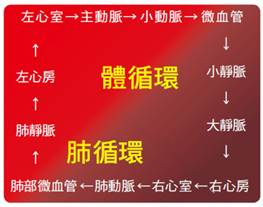
▲ 人體體循環與肺循環路徑示意圖